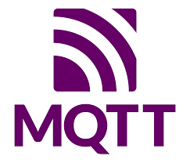
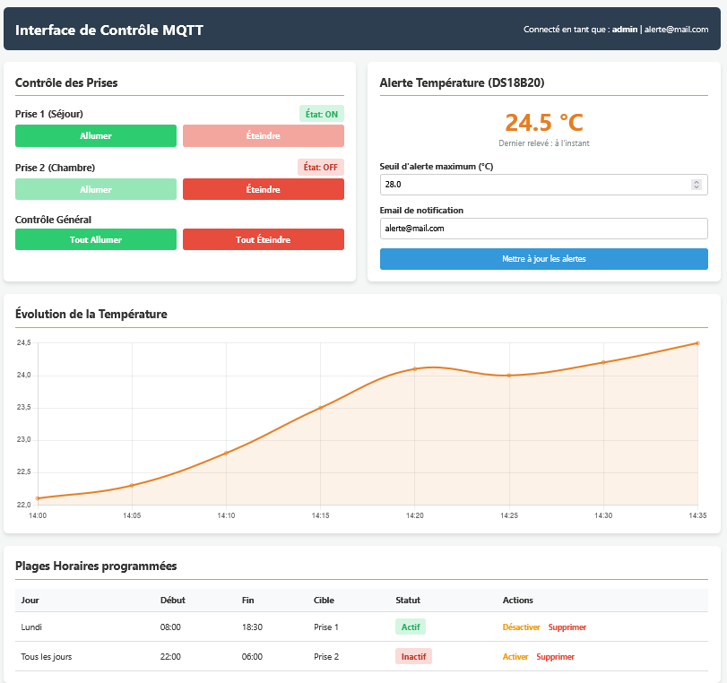

Résumé de la SAESAE Summary
Au cours de cette SAE, nous devions réaliser une maquette de prise électrique connectée avec une carte During this SAE, we had to create a model of a connected electrical plug using an ESP8266. Celle-ci nous permet de contrôler notre prise (une led) via board. This allows us to control our plug (an LED) via MQTT depuis une application sur téléphone et un site web dynamique Django. from a mobile application and a dynamic Django website.
Environnement et OutilsEnvironment and Tools
ESP8266
Microcontrôleur Wi-Fi utilisé pour piloter le relai de la prise et communiquer avec le broker MQTT.Wi-Fi microcontroller used to control the plug's relay and communicate with the MQTT broker.
Python / Django
Framework utilisé pour la création du serveur web dynamique hébergé sur un Raspberry Pi.Framework used for creating the dynamic web server hosted on a Raspberry Pi.

MQTT
Protocole de messagerie léger (Pub/Sub) utilisé pour la communication en temps réel entre l'IoT et le web.Lightweight messaging protocol (Pub/Sub) used for real-time communication between IoT and the web.
Application Android Android Application
Développement et configuration d'une application mobile pour le contrôle déporté de la prise.Development and configuration of a mobile application for remote control of the plug.
Ma partie : réalisation du site web dynamiqueMy part: creating the dynamic website
Au cours du projet, j'ai participé à la création du During the project, I participated in the creation of the site web dynamique Djangodynamic Django website. Celui-ci devait permettre l'implémentation des différentes fonctionnalités de la prise : . This was meant to implement the various functionalities of the plug:

Fonctionnalités implémentées sur le siteFeatures implemented on the site
- Allumer et éteindre la prise manuellement.Turn the plug on and off manually.
- Récupération de l'état de la prise en temps réel (retour d'état).Real-time retrieval of the plug's status (status feedback).
- Programmation de plages horaires journalières d'allumage.Scheduling daily on/off time slots.
- Affichage graphique des températures reçues depuis le capteur DS18B20.Graphical display of temperatures received from the DS18B20 sensor.
- Alerte de dépassement de la température maximum configurée.Alert for exceeding the configured maximum temperature.
Grandes étapes techniquesMain technical steps
1. Conception Matérielle1. Hardware Design
Modélisation du circuit via EasyEDA et intégration des composants physiques (carte ESP8266, capteur de température Dallas DS18B20, relai) répondant aux critères de coût et de taille.Circuit modeling via EasyEDA and integration of physical components (ESP8266 board, Dallas DS18B20 temperature sensor, relay) meeting cost and size criteria.
2. Développement Embarqué (C++)2. Embedded Development (C++)
Programmation du microcontrôleur via l'IDE Arduino. Gestion de la connexion Wi-Fi (AP puis STA via WiFiManager) et publication/souscription aux topics MQTT (PubSubClient).Programming the microcontroller via the Arduino IDE. Wi-Fi connection management (AP then STA via WiFiManager) and publish/subscribe to MQTT topics (PubSubClient).
3. Infrastructure Back-End3. Back-End Infrastructure
Déploiement d'un broker MQTT privé et création d'une architecture MVC sous Django pour interagir avec la base de données relationnelle MySQL stockant les relevés de température et les créneaux.Deployment of a private MQTT broker and creation of an MVC architecture using Django to interact with the MySQL relational database storing temperature readings and time slots.
4. Logique Serveur et Télémétrie4. Server Logic and Telemetry
Création de scripts d'automatisation en Python exploitant la bibliothèque Paho-MQTT pour s'abonner aux requêtes de la prise, gérer les états (LedState) et déclencher des emails d'alerte.Creation of Python automation scripts using the Paho-MQTT library to subscribe to plug requests, manage states (LedState), and trigger alert emails.
Compétences validéesValidated Skills
Détail des Apprentissages Critiques développés lors de cette SAE :Details of the Critical Learnings developed during this SAE:
- AC22.01 Déployer et caractériser des systèmes de transmissions complexes (Wi-Fi, MQTT). Deploy and characterize complex transmission systems (Wi-Fi, MQTT).
- AC23.02 Développer une application Web dynamique à partir d’un cahier des charges donné. Develop a dynamic Web application based on a given specification.
- AC23.03 Utiliser un protocole réseau (MQTT) pour programmer une application client/serveur. Use a network protocol (MQTT) to program a client/server application.
- AC24.03Cyber Sécuriser les services (mise en place d'un broker privé et gestion d'accès web). Secure services (setup of a private broker and web access management).
Analyse réflexiveReflective Analysis
Au cours de ce projet, j'ai pu m'organiser dans un travail d'équipe qui demandait beaucoup de communication pour l'avancement des différentes étapes. En effet, même si je travaillais seul sur le site, je devais travailler avec les autres participants pour garder la cohésion du projet entre par exemple la logique des topics MQTT. Je suis particulièrement satisfait de ce projet car nous sommes parvenus à finaliser l'ensemble des points demandés dans le cahier des charges. During this project, I was able to organize myself in teamwork that required a lot of communication for the advancement of the different stages. Indeed, even though I worked alone on the site, I had to work with the other participants to maintain the project's cohesion, for example regarding the logic of MQTT topics. I am particularly satisfied with this project because we managed to finalize all the points requested in the specifications.